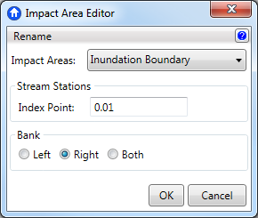

Impact Area Editor
In Geo-FDA, all structures must be in an impact area, and each impact area must have an index location defined. Defining index locations occurs when importing an impact area.
The index location can be changed, however, through the
Impact Area Editor. After selecting the impact area from the dropdown list, click in the Index Point text box and enter the new value. The index point cannot be an integer and cannot be negative. Common values are between 0 and 1.
The bank location can also be changed through the editor. Simply click the radio button next to the desired bank.
The name can be changed by selecting the impact area name from the dropdown box and then clicking the Rename button in the top left corner.
